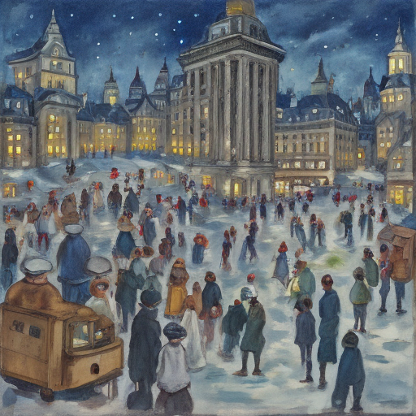

Today was Black Friday and I found myself wandering through Trafalgar Square, the lights flickering like ghostly reflections in the cold winter air. People were busy with their shopping, but a group of miners from a nearby coalmine caught my eye. They had set up a booth to sell handmade crafts and tell stories about life underground. It was surreal seeing these folks now, sharing tales under an eerie canopy of stars above the square.

Keywords: Black Friday, Trafalgar Square, Mount Pleasant coalmine law
Fictional diary entry.